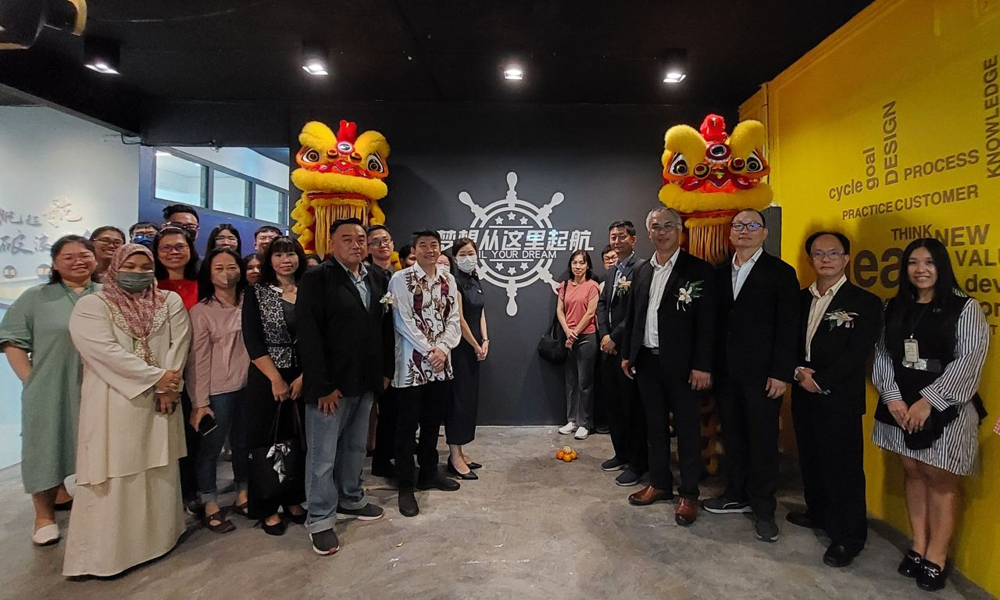
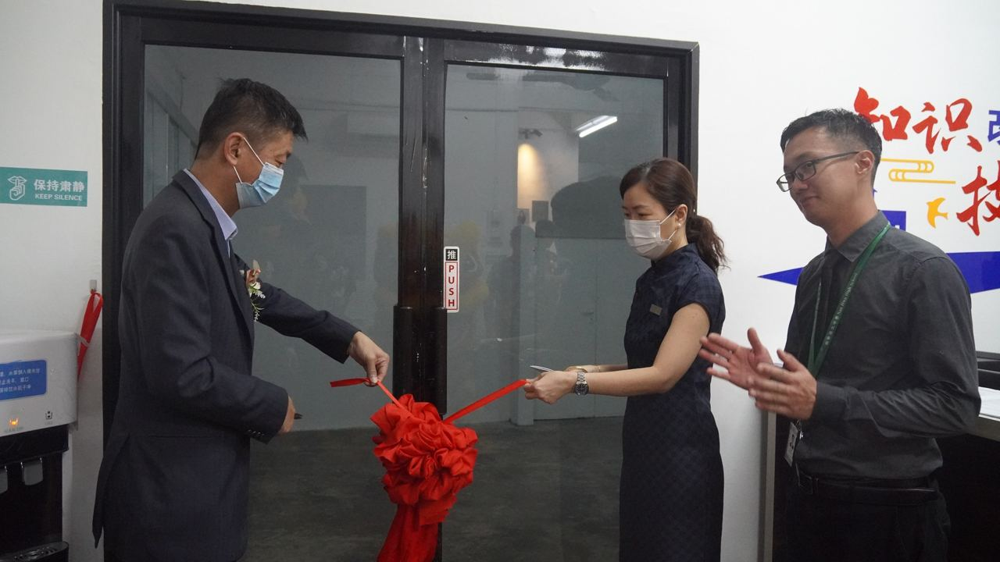
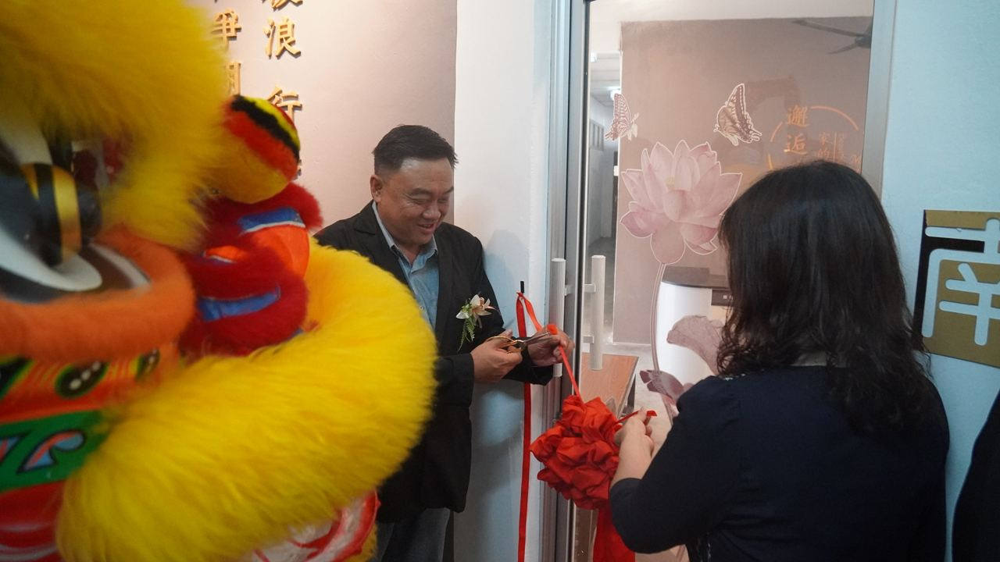
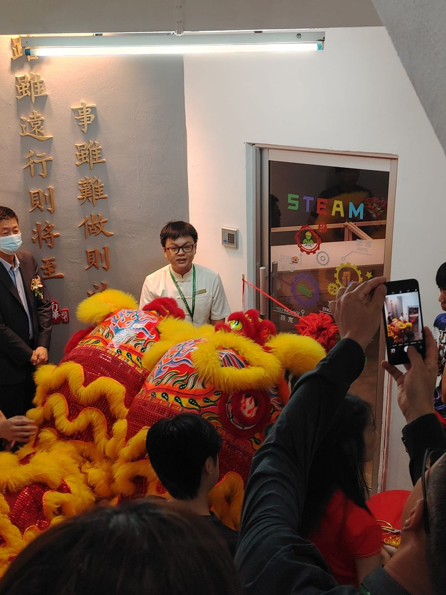
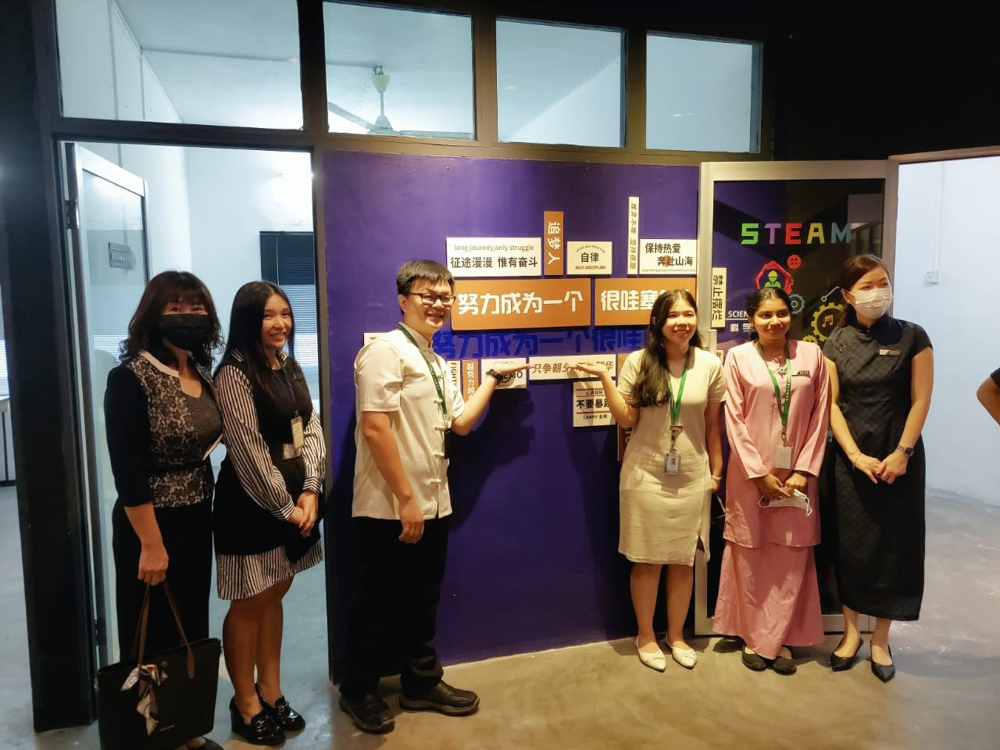
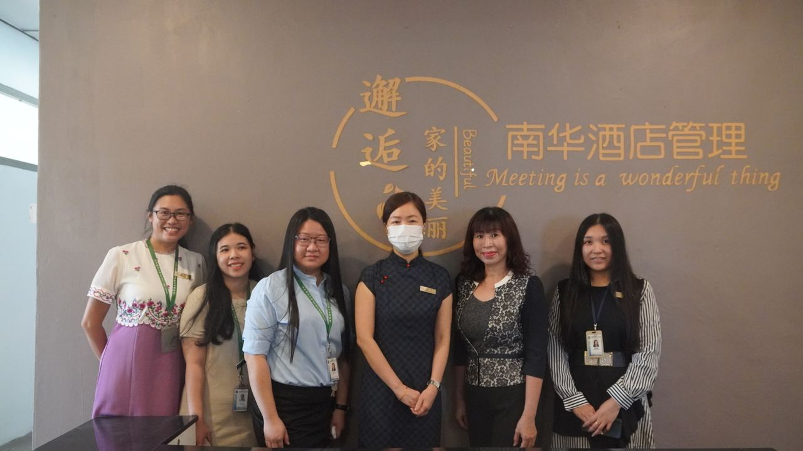
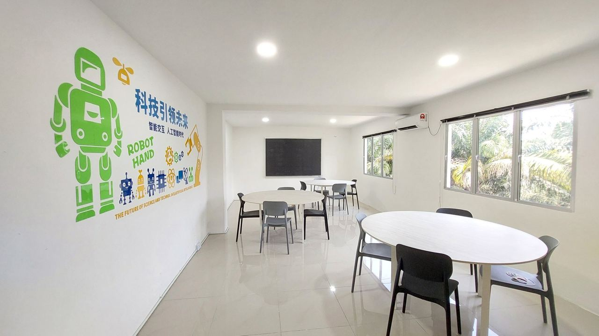
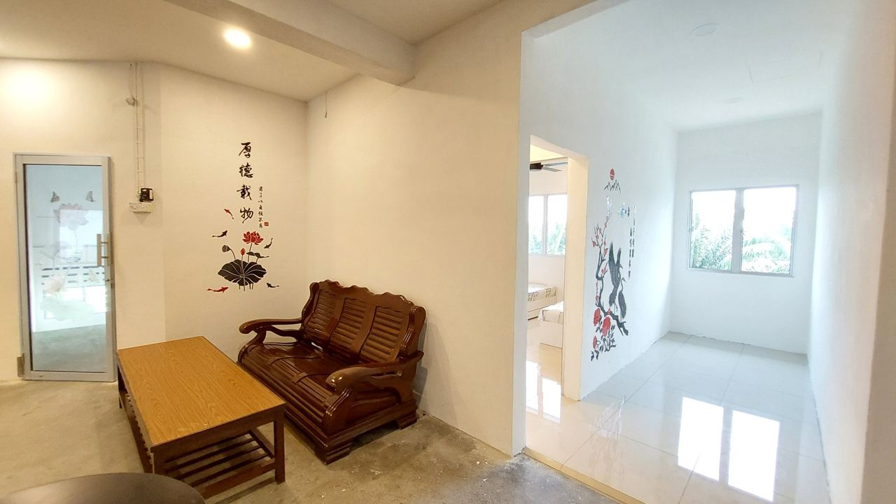

南华独中科技楼开幕礼
南华独中科技楼开幕礼
打造学生技职教育梦想摇篮
南华独中科技楼技职教育中心于日前隆重开幕。董家教及校友共同见证这一标志性的事件，象征着本校着力于兑现对技职教育的承诺，对未来领导者和创新者的培养的决心。
技职教育中心万顺华总监受访时表示，科技楼的开幕象征着本校技职教育中心迈向创新未来的重要一步。它不仅是南华独中对技能培训的承诺，更是追求卓越的表现。万总监强调，”科技楼将成为培养下一代科技人才的摇篮，为莘莘学子提供最先进的学习环境和设施，帮助他们更好地适应未来的职业发展，为科技行业的需求做好准备。”
科技楼将为学生提供更广阔的学习空间和更丰富的资源。从现代化的实验室到先进的技术设备，学生将能够在这里实践他们所学，并培养解决实际问题的能力。第一层的多用途活动室及技职教室将提供学生们展示他们所学技能的机会，并举办各种活动，从工艺品展览到科学竞赛，无所不包。第二层的STEAM教室将为学生们提供一个探索科学、技术、工程、艺术和数学的空间，鼓励他们在跨学科的环境中寻求创新。第三层的南华酒店管理部门则为那些对酒店管理和服务行业感兴趣的学生提供了实践机会，培养他们成为行业中的领导者。
此外，董事长颜登逸于今年董家教共识营提出“各美其美 美人之美 美美与共 天下大同”教育大愿，促成跨族群 跨文化的相互理解包容。 万顺华总监宣布推动“曼绒县南华资讯志工计划”以缩短城乡数位落差“机器人课室”向曼绒县华小伸出美美之手，目前，已有两所华小报名参加。踏出了“美美与共”的第一步。
出席开幕仪式的嘉宾包括有董事长颜登逸先生、董事总务何添胜先生、董事副总务拿督黄思贤、董事副总务林道祥、董事叶绍龙、家联主席叶燕妮女士、校友会主席林嵩胜先生。
#科技楼 #技职教育 #美美与共
#南华独中 #曼绒 #实兆远







